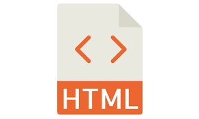
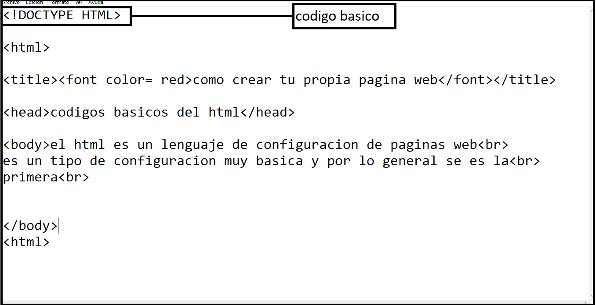
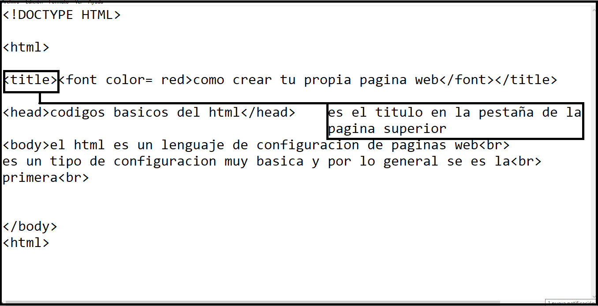
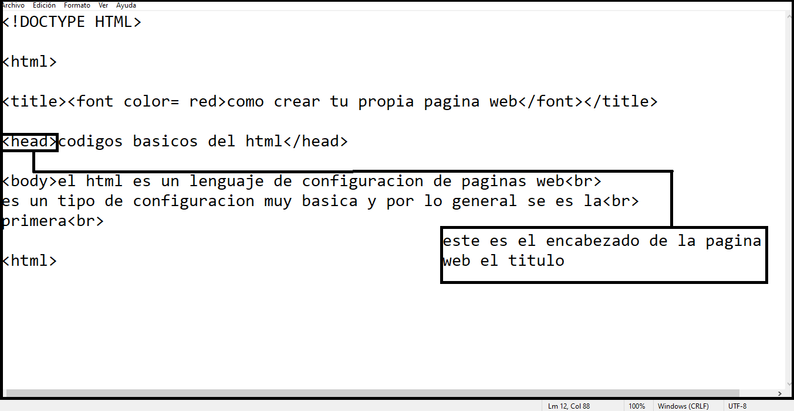
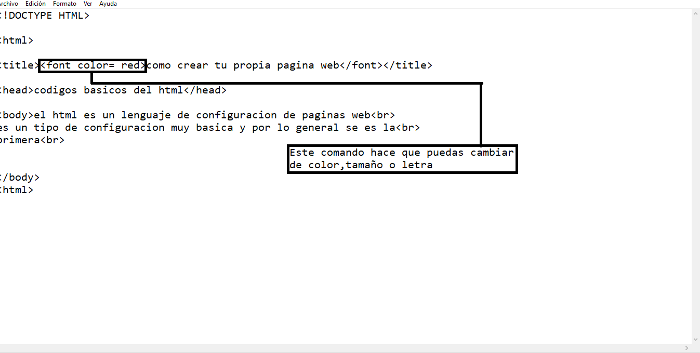
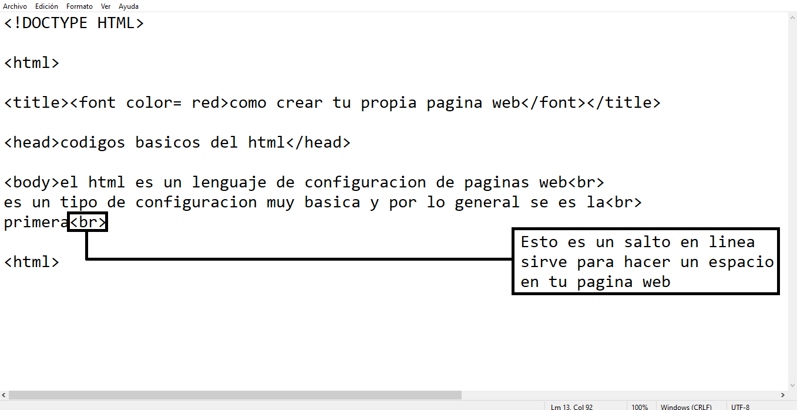

guia basica html
codigos basicos de HTML
-html es en sus siglas en español lenguaje de marca de hipertexto esta se utiliza para que los principiantes creadores web tengan

unas buenas bases de programacion el html se creo en 1980 por tim bernenrs-lee quien trabajo en la cern (orzanizacion Europea para la
investigacion nuclear).
El HTML se creo en principio con el objetivo de divulgar informacion con texto y algunas imagenes. no se penso que se llegara a tal altura
que se utilizara tambien para una actividad de osio, aparte de html hay otras herramientas de programacion como
CSS o javascript el html tiene varias version y todos al menos hemos escuchado el famosos html 5 o
html 4.1 este es el mismo html solo que es una version atrasada del html osea el html 5 es
el mismo pero mas reciente que el 4.1 y el html es la version mas recientes de html. El HTML es un lenguaje de programacion muy facil de aprender y con unos pocos comandos ya puedes hacer una pagina web basica, acontinuacion mostraremos unos comandos basicos para que puedas crear tu propia pagina web
comandos basicos
!DOCTYPE HTML

-este comando se utiliza para declarar que este escrito como una pagina web ,esta etiqueta sirve mas para que el hoster(persona que sube a internet tu pagina web)
tenga en cuenta en que lenguaje de programacion esta escrito el codigo por lo general uno antes de entregarle la pagina al hoster se le informa en que lenguaje de
programacion se encuentra la pagina web aqui te dejare mas info de DOCTYPE html
.
.
.
.
.
title
esta etiqueta hace visible un titulño en la parte superior de la pagina web aparece en la pestaña superior esta se utiliza para que apenas entre
una persona a la pagina web toca resaltar que este comando no se le puede agregar ni
(font)(br)(h1)(center)(aling)(center) aqui te dejo mas info de el title
.
.
head

esta etiqueta sirve para poner en la parte superior un texto corto como un titulo que describa la pagina web y sea algo notario a este comando se le puede aplicar mas comandos como (font)(br)(h1)(aling)(center)aqui a continuacion te dejare mas info de la etiqueta head
.
.
.
font

esta etiqueta se utiliza para (subir tamaño, cambiar tipo de la letra, cambiar el tamaño de la letra,centar titulos y escritos)
esta etiqueta es mas de tipo decorativo aqui se pueden utilizar colores hexadecimales y tambien voy a dejar mas informacion de font
.
.
.
.
.
br

esta etiqueta sirve para hacer espacios este se conoce mas como un salto en linea se usa para que la pagina web este con espacios y mas organizada aqui te voy a dejar mas informacion del tema